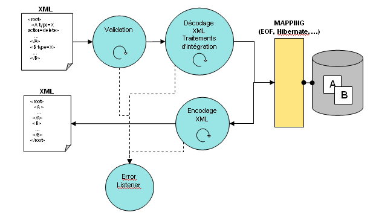

Introduction
Qu'est ce que XDI ?
XDI est un framework en JAVA pour l'échange et l'intégration de données, adapté à tous types d'applications. Le principe de fonctionnement consiste en trois éléments :
- Formaliser une base existante sous forme de document XML pour permettre l'import et l'export de données via ce format, indépendamment de la base de donnée utilisée et en s'appuyant sur des outils de mapping relationnel / objet (EOF, Hibernate, OJB, ...).
- Convertir des formats XML existants ou des formats autres que XML pour s'adapter à l'existant
- Echanger les données via différents types de services
Import / Export
L'import et l'export de donnée sont des processus "intelligents" basés sur un modèle objet permettant leur contrôle et leur extension pour des besoins spécifiques :
- l'importation de données est par défaut capable de :
- détecter si la donnée à insérer existe déjà et de définir le comportement associé : mis à jour, écrasement, ignore ...
- insérer la donnée
- supprimer la donnée
- l'exportation de donnée est par défaut capable de :
- générer un format XML de base représentant les données brutes stockées en base
- générer un format XML particulier
XDI permet l'export et l'import de tous types de données, même binaires.
XDI intègre une validation des données et une gestion d'erreur.
Pour les spécificités liées à certaines applications, le principe d'extension permet, par exemple, de fusionner des données, d'effectuer des validations supplémentaires, de canaliser la gestion des erreurs pour s'adapter à un mode spécifique (envoi d'alertes, logs ...)
Pour permettre l'importation de données en base, un format XML représentant la base de données est défini. Ce format contient un ensemble d'attributs rattachés à des balises permettant de définir les types de données et les actions (création, mise à jour, suppression, fusion ...).
La validation est gérée en définissant un XMLSchema ou une DTD en corrélation avec le format XML précédemment défini.
La gestion des erreurs est par défaut "passive". Le principe consiste en un objet à l'écoute des erreurs remontées lors des traitements qui par défaut logue l'information mais n'arrête pas le processus. Ainsi les données correctes sont traitées. Cet objet peut être étendu pour s'adapter à des besoins spécifiques et permet alors de stopper le processus si besoin.
Pour des raisons de performances, les données sont traitées sous forme d'entité. Le document XML consiste en une liste de "fragment" XML représentant une table de la base de données. Ainsi il est possible de traiter des documents XML de grande taille, la lecture du document se faisant séquentiellement, entité par entité.

Conversion
XDI intègre un modèle de conversion pour s'adapter à des formats XML existants ou pour exploiter des formats autre que XML à l'import comme à l'export.
L'adaptation à des formats XML existant utilise la technologie XSLT, l'utilisateur d'XDI devra concevoir son convertisseur en créant une feuille de style XSL.
L'exploitation de formats autre que XML est plus spécifique. Actuellement XDI propose de base deux convertisseurs :
- fichier texte à séparateur de champs : CSV (Comma Separated Value)
- fichier texte à longueur de champs fixe